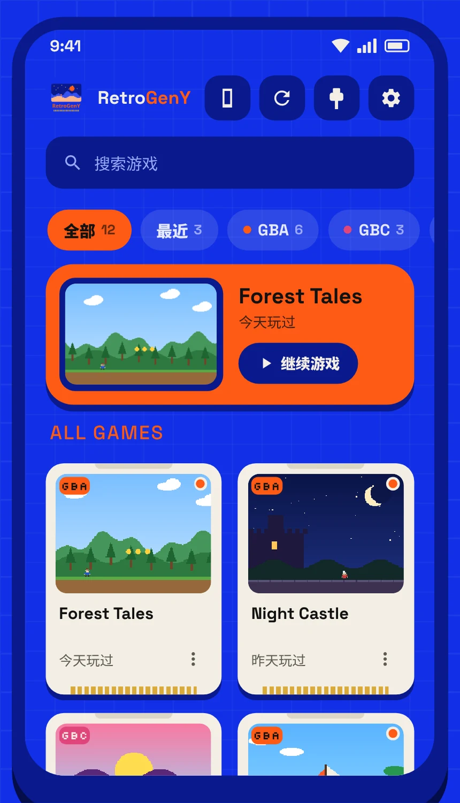
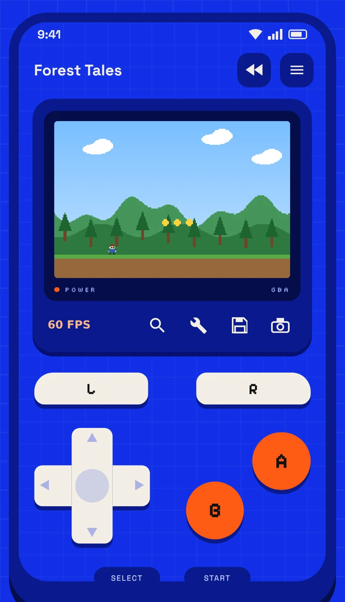

RetroGenY
在安卓手机上玩 Game Boy Advance、Game Boy 和 Game Boy Color 游戏，还能和朋友联机。
- 和朋友联机：Wi-Fi、蓝牙或 USB 线
- 内置 9000 多条金手指，还有内存工具
- 即时存档、倒带和加速
- 支持手柄，多种画面滤镜


在安卓手机上玩 Game Boy Advance、Game Boy 和 Game Boy Color 游戏，还能和朋友联机。

